Farm Gallery
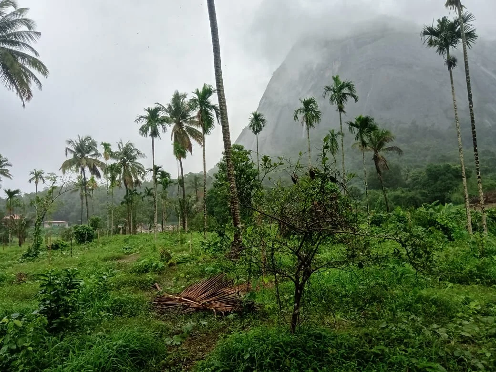
Lush green fields under a clear sky with palm trees and a misty mountain in the background.
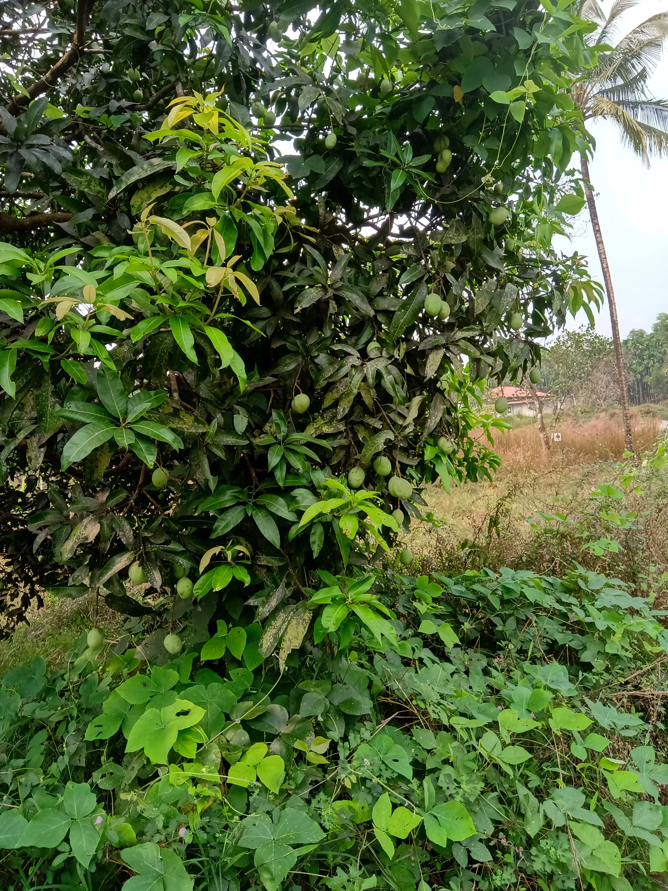
A vibrant mango tree laden with green, unripe mangoes surrounded by lush foliage.
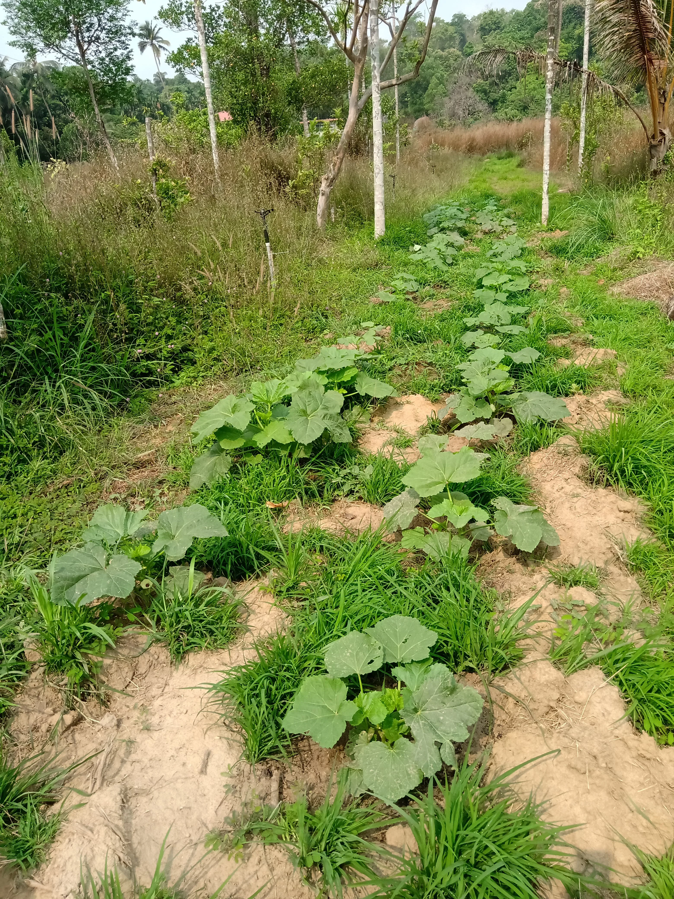
Rows of young, healthy pumpkin plants growing in rich soil amidst green grass.
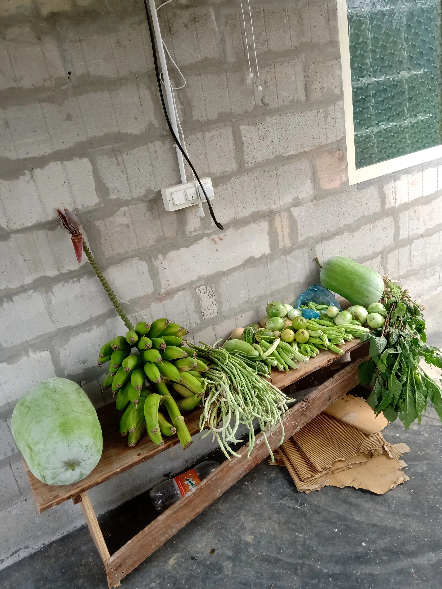
A rustic wooden bench displaying a fresh harvest of organic vegetables including bananas, gourds, and long beans against a brick wall.
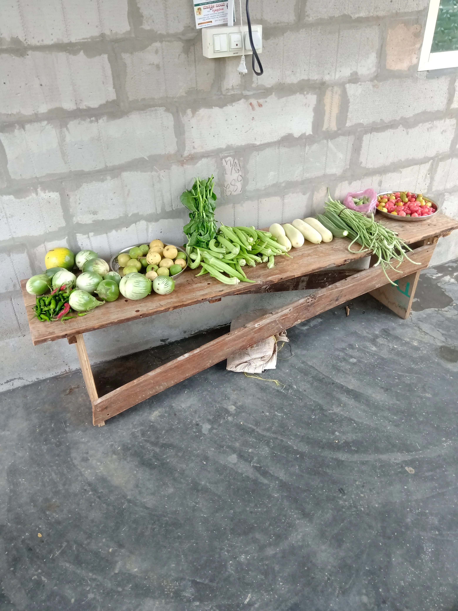
A wide shot of a wooden bench filled with a colorful assortment of freshly picked organic vegetables and fruits.
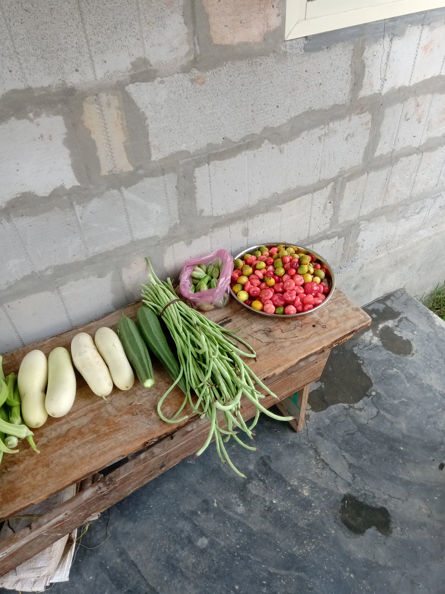
A close-up of a wooden bench showcasing a variety of organic produce, including light green gourds, long beans, and small red and yellow fruits.
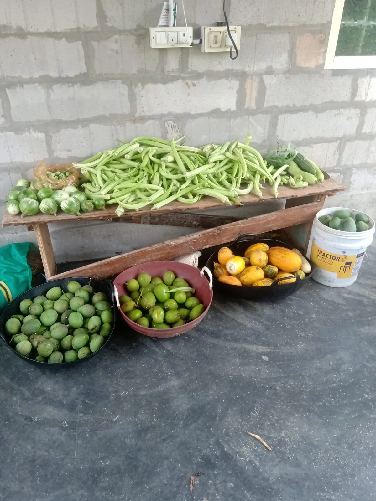
A large variety of freshly harvested organic vegetables and fruits laid out on a wooden bench and in baskets, ready for market.
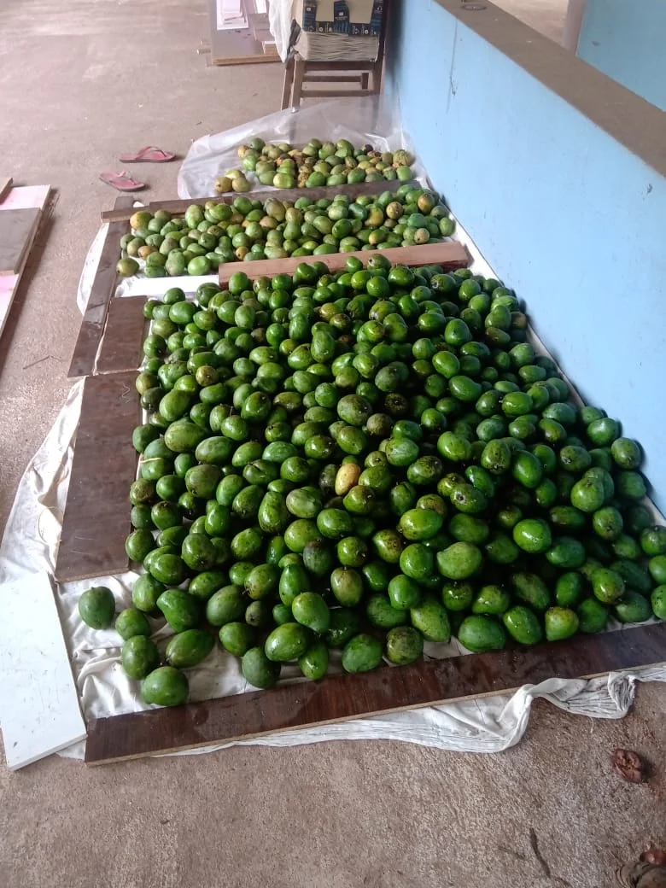
Numerous green mangoes spread out on white sheets on the floor, indicating a bountiful harvest.
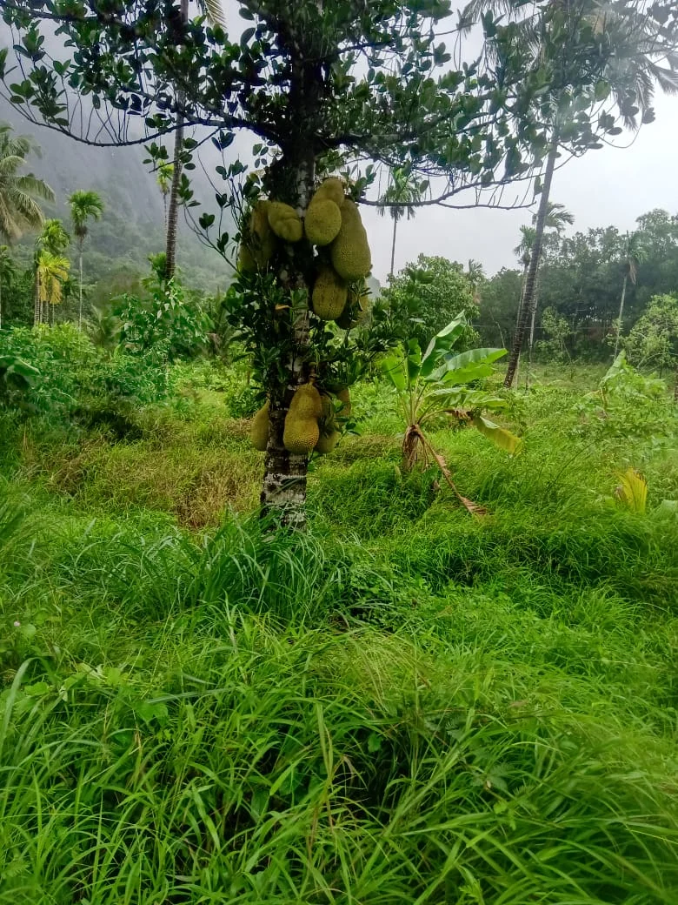
A tall jackfruit tree heavily laden with large, green jackfruits, standing in a vibrant green field with distant mountains.
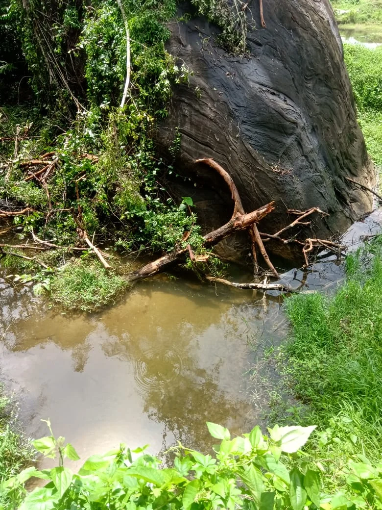
A tranquil scene of a small stream flowing past a large, dark rock formation and surrounded by lush foliage.
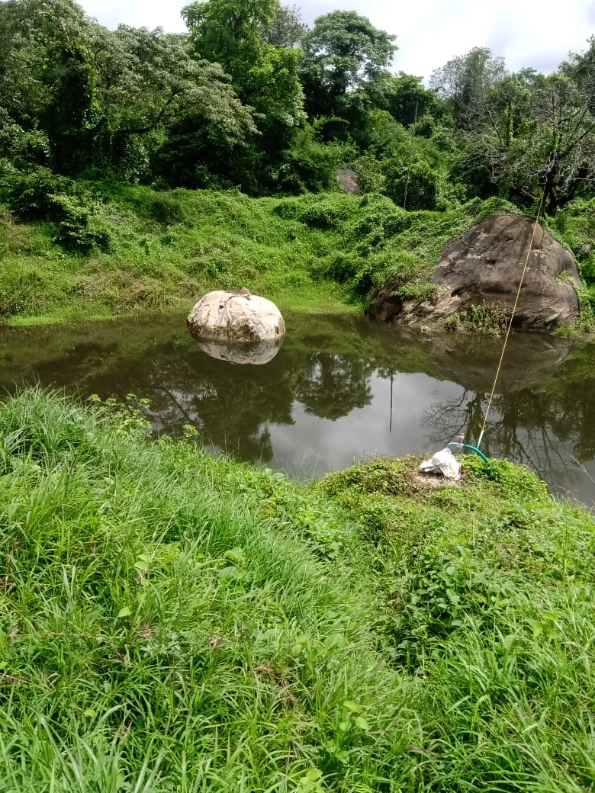
A serene pond on the farm with two large white rocks, surrounded by lush green grass and trees under a cloudy sky.
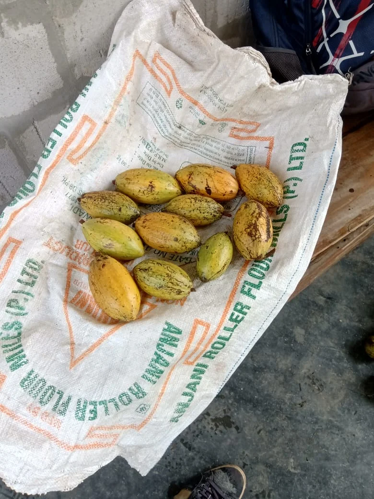
A collection of ripe, yellow and green cocoa pods resting on a white sack, showcasing a fresh harvest.
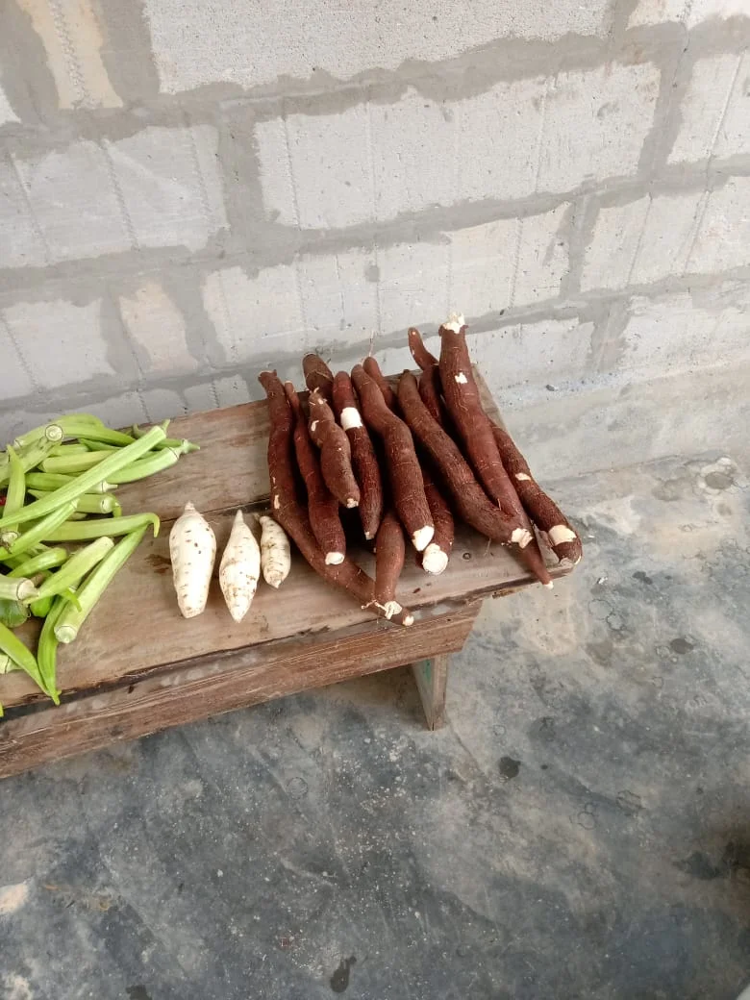
A display of freshly harvested cassava roots and some green okra pods on a wooden bench against a concrete wall.
A newly planted field with young saplings, surrounded by tall palm trees under a dramatic cloudy sky, showing the farm's expansion.
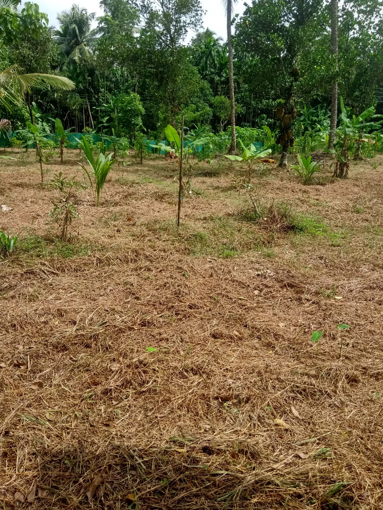
A wide view of a cleared farm plot with young plants, covered in dry grass clippings, ready for new crops under a bright sky.